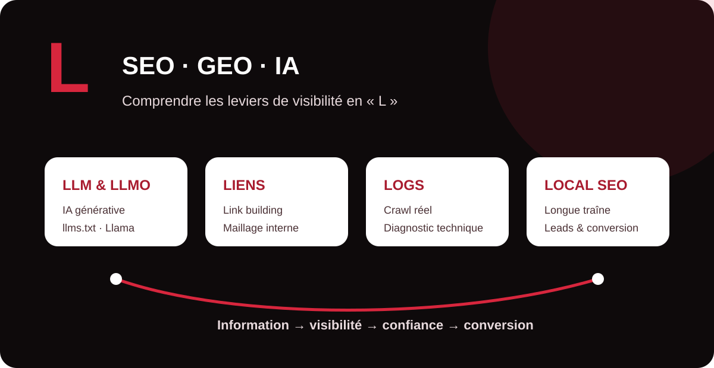

Le vocabulaire du référencement évolue avec les usages : aux notions historiques de liens, longue traîne et SEO local s’ajoutent désormais les LLM et les méthodes d’optimisation destinées aux moteurs génératifs. Ce guide MinoSeo rassemble les termes en L les plus utiles pour relier acquisition, technique, contenu, conversion et visibilité IA.

Lead
Un lead est un contact ayant manifesté un intérêt identifiable pour une entreprise, une offre ou un service. Il peut provenir d’un formulaire, d’une demande de devis, d’un appel, d’une inscription ou d’une autre action mesurable.
En SEO, le trafic n’est donc pas une finalité. Une stratégie performante cherche à attirer des visiteurs correspondant à la cible, puis à faciliter leur passage vers une action commerciale. Le suivi des leads permet de relier la visibilité organique aux résultats business.
llms.txt
llms.txt est une convention proposée pour fournir aux agents et modèles de langage une version concise et structurée des ressources importantes d’un site. Le fichier est écrit en Markdown et peut notamment présenter le site puis pointer vers des contenus de référence.
Il faut le distinguer de robots.txt : llms.txt n’est pas un mécanisme d’autorisation ou d’interdiction de crawl. C’est un moyen de faciliter la découverte et la compréhension de ressources par les systèmes qui choisissent de prendre en charge cette convention.
LLMO
LLMO (Large Language Model Optimization) désigne les pratiques visant à rendre les informations d’une marque plus compréhensibles, fiables et réutilisables par les grands modèles de langage et les interfaces qui s’appuient sur eux.
Dans la pratique, le LLMO rejoint plusieurs principes du GEO : informations factuelles explicites, entités bien définies, expertise démontrable, structure éditoriale claire, cohérence entre les pages et sources facilement vérifiables. Il ne s’agit pas d’une recette technique unique mais d’une approche de visibilité adaptée aux nouveaux parcours de recherche.
LLaMA
LLaMA est le nom historique de la famille de grands modèles de langage développée par Meta, aujourd’hui généralement stylisée Llama. Ces modèles peuvent servir de base à des assistants, outils de génération, systèmes de recherche ou applications d’entreprise.
Pour le SEO/GEO, connaître les différentes familles de modèles aide à comprendre qu’une marque n’est plus seulement découverte via une page de résultats classique : ses informations peuvent aussi être recherchées, résumées ou reformulées dans des interfaces conversationnelles.
LLM
Un LLM (Large Language Model), ou grand modèle de langage, est un modèle d’intelligence artificielle entraîné sur de très grandes quantités de données textuelles afin de traiter et générer du langage. Les LLM peuvent répondre à des questions, résumer, classer, reformuler ou produire du contenu.
Ils ne fonctionnent pas comme un index de moteur de recherche traditionnel. Selon le produit, un LLM peut répondre à partir de connaissances apprises, d’un contexte fourni ou de sources récupérées en temps réel. Cette différence explique pourquoi le SEO classique et le GEO sont complémentaires.
logs
Les logs serveur sont des enregistrements techniques des requêtes reçues par un serveur. Ils peuvent indiquer l’URL demandée, l’heure, le code HTTP, l’agent utilisateur ou d’autres informations utiles au diagnostic.
En SEO technique, l’analyse de logs permet notamment d’observer le comportement réel des robots : pages explorées, fréquence de passage, erreurs, redirections et zones peu visitées. Elle complète les outils de crawl, qui simulent une exploration sans montrer exactement ce qu’un robot a réellement demandé au serveur.
Ligne de flottaison
La ligne de flottaison désigne la limite entre la partie d’une page visible immédiatement à l’écran et le contenu accessible après défilement. Sa position varie selon la taille de l’écran, le navigateur et l’appareil.
Pour l’expérience utilisateur, la zone initialement visible doit rapidement expliquer la proposition de valeur et orienter l’utilisateur. Il n’est cependant pas nécessaire de concentrer artificiellement tout le contenu important au-dessus de cette ligne : lisibilité, hiérarchie et vitesse d’affichage sont prioritaires.
link building
Le link building regroupe les actions destinées à obtenir des liens provenant d’autres sites vers ses propres pages. Ces backlinks peuvent contribuer à la découverte des contenus, à la notoriété et aux signaux de pertinence et de réputation.
Une stratégie durable privilégie les liens éditorialement justifiés, provenant de sites cohérents avec la thématique et obtenus sans schéma artificiel. La qualité, le contexte et la diversité comptent davantage qu’une accumulation mécanique de liens.
Landing page
Une landing page, ou page d’atterrissage, est une page conçue pour accueillir un visiteur provenant d’une campagne, d’une recherche ou d’un lien et l’orienter vers une action précise : prise de contact, inscription, demande de devis ou achat.
Une landing page SEO doit concilier deux objectifs : répondre précisément à l’intention de recherche et faciliter la conversion. Titre clair, preuve, bénéfices, contenu utile, CTA visible et performance mobile doivent fonctionner ensemble.
Local SEO
Le Local SEO, ou référencement local, vise à améliorer la visibilité d’une entreprise auprès des internautes effectuant une recherche géographiquement liée à ses services. Il concerne notamment les requêtes associant une activité à une ville ou une zone, ainsi que les résultats locaux de Google.
Les leviers incluent la cohérence des informations d’établissement, la qualité du site, les pages locales réellement utiles, les avis, les citations locales et la pertinence de la présence Google Business Profile lorsque l’activité y est éligible.
Ligne éditoriale
La ligne éditoriale définit les règles qui donnent une cohérence durable aux contenus d’une marque : sujets, angle, ton, niveau d’expertise, vocabulaire, formats, audience et objectifs.
En SEO et GEO, elle évite de publier des contenus isolés uniquement pour cibler des mots-clés. Une ligne claire aide à construire une expertise thématique identifiable et à produire des informations cohérentes d’une page à l’autre.
Lien interne
Un lien interne relie deux pages appartenant au même site. Il aide les visiteurs à poursuivre leur navigation et permet aux moteurs de découvrir les pages et de mieux comprendre les relations entre les contenus.
Les liens importants doivent être techniquement explorables et utiliser des ancres descriptives. Le maillage interne peut aussi renforcer les pages stratégiques en les reliant depuis des contenus contextuellement proches, sans multiplier les liens artificiellement.
Longue traine
La longue traîne désigne l’ensemble des requêtes généralement plus spécifiques et moins recherchées individuellement que les termes génériques, mais qui, cumulées, peuvent représenter un potentiel important. Elles traduisent souvent une intention plus précise.
Par exemple, une requête détaillée sur un besoin, une technologie, un secteur ou une localisation peut attirer moins de recherches qu’un mot-clé générique tout en générant un trafic plus qualifié. Une bonne stratégie longue traîne repose sur la couverture réelle des besoins, pas sur la création massive de pages quasi identiques.
Comment relier ces notions dans une stratégie SEO/GEO ?
Ces termes couvrent quatre dimensions complémentaires : l’IA et la compréhension de l’information avec LLM, Llama, LLMO et llms.txt ; la technique avec les logs ; l’autorité et l’architecture avec le link building et les liens internes ; enfin l’acquisition et la conversion avec les leads, landing pages, Local SEO et requêtes longue traîne.
| Famille | Notions | Objectif |
|---|---|---|
| IA / GEO | LLM, LLaMA, LLMO, llms.txt | Rendre l’information claire, identifiable et exploitable |
| Technique | Logs, ligne de flottaison | Diagnostiquer le crawl et améliorer l’expérience |
| Autorité / architecture | Link building, lien interne | Relier les contenus et développer la crédibilité |
| Acquisition | Local SEO, longue traîne, ligne éditoriale | Capter une demande qualifiée |
| Conversion | Lead, landing page | Transformer la visibilité en opportunités |
MinoSeo, agence SEO/GEO depuis plus de 15 ans, accompagne les entreprises pour transformer ces notions en stratégie cohérente : audit, contenu, maillage interne, netlinking, optimisation locale et préparation des informations aux nouveaux environnements de recherche IA.
Transformez votre visibilité en opportunités
Identifiez les leviers SEO et GEO prioritaires pour votre site avec MinoSeo.
Demander un audit gratuit